Please review the spring campaign pitch deck in my documents folder and add a speaker note to every slide saying whether the claim on it is backed by the source list on the final slide — start each note with "VERDICT: OK" or "VERDICT: NEEDS SOURCE". Save when done.
THINKINGI need to find a "spring campaign pitch deck" in the documents folder. Let me first take a screenshot to see the current state, then open the file manager or terminal to locate the file. I'll start by opening a terminal to find the file efficiently.
ACTIONI'll help with this task. Let me start by understanding what's needed and locating the file.
I'll begin by locating the pitch deck file in your documents folder. Let me open a terminal to find it.
EXECUTED (pyautogui in VM)pyautogui.click(32, 669)
step 2 22:35:05
THINKINGThe terminal is open. I need to locate the spring campaign pitch deck. It's likely a .pptx file. Let me search the Documents folder for presentation files. I'll list the Documents folder to find the file.
ACTIONThe terminal is open. Let me locate the pitch deck file in the Documents folder.
EXECUTED (pyautogui in VM)pyautogui.click(599, 299)
step 3 22:36:04
THINKINGI need to find the pitch deck. Let me search for presentation files in the Documents folder. I'll list all files there to understand what's available.
TOOL CALL<tool_call>
<function=computer_use>
<parameter=action>
type
</parameter>
<parameter=text>
ls -la ~/Documents/
</parameter>
</function>
</tool_call>
EXECUTED (pyautogui in VM)pyautogui.typewrite("ls -la ~/Documents/")
step 4 22:37:11
THINKINGI typed the command but haven't pressed Enter yet. Let me press Enter to execute it.
EXECUTED (pyautogui in VM)pyautogui.press("return")
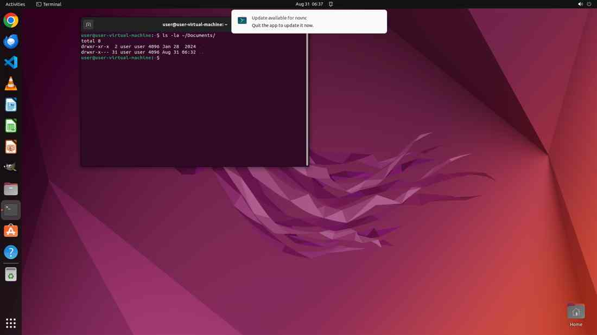
step 5 22:38:17
THINKINGThe Documents folder appears empty (only . and .. entries). The pitch deck isn't here. Let me search the whole home directory for presentation files to locate it. There's an "Update available for novnc" popup I'll ignore. Let me search broadly for pptx/ppt files.
ACTIONThe Documents folder appears empty. Let me search more broadly for the pitch deck file.
THINKINGThe command is running (find can take a moment). I already pressed Enter via the newline in the type. Let me take a screenshot to see the results after a brief wait.
THINKINGIt seems the command didn't execute - the cursor is still on the command line and no new prompt appeared. The newline in my type may not have registered as Enter. Let me press Return explicitly.
ACTIONThe command seems not to have executed. Let me press Enter.
EXECUTED (pyautogui in VM)pyautogui.press("return")
step 8 22:46:27
THINKINGFound it: /home/user/documents/spring_pitch.odp — a lowercase "documents" folder, which is why ~/Documents/ (capital D) appeared empty. It's an .odp (LibreOffice Impress) file. I'll open it with LibreOffice Impress. The other file (13_0.pptx in Downloads) is likely a distractor. Let me open the spring_pitch.odp file directly with soffice.
ACTIONFound the file: `/home/user/documents/spring_pitch.odp` (a lowercase "documents" folder). It's an Impress presentation. Let me open it.
EXECUTED (pyautogui in VM)pyautogui.typewrite("soffice --impress /home/user/documents/spring_pitch.odp")
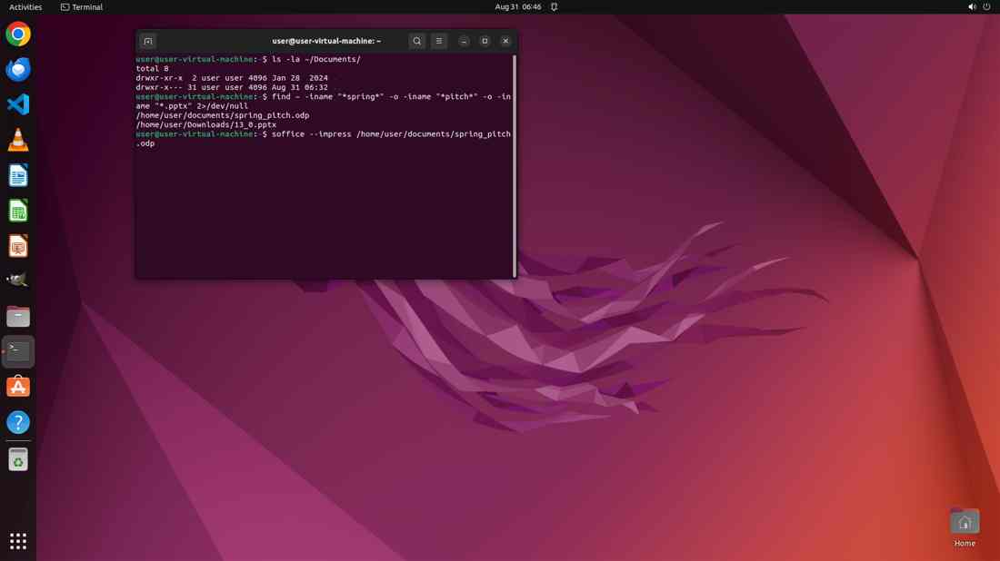
step 9 22:47:13
THINKINGThe command was entered but the newline in the type didn't execute it (the prompt hasn't returned). Let me press Return to launch LibreOffice Impress, then wait for it to open.
EXECUTED (pyautogui in VM)pyautogui.press("return")
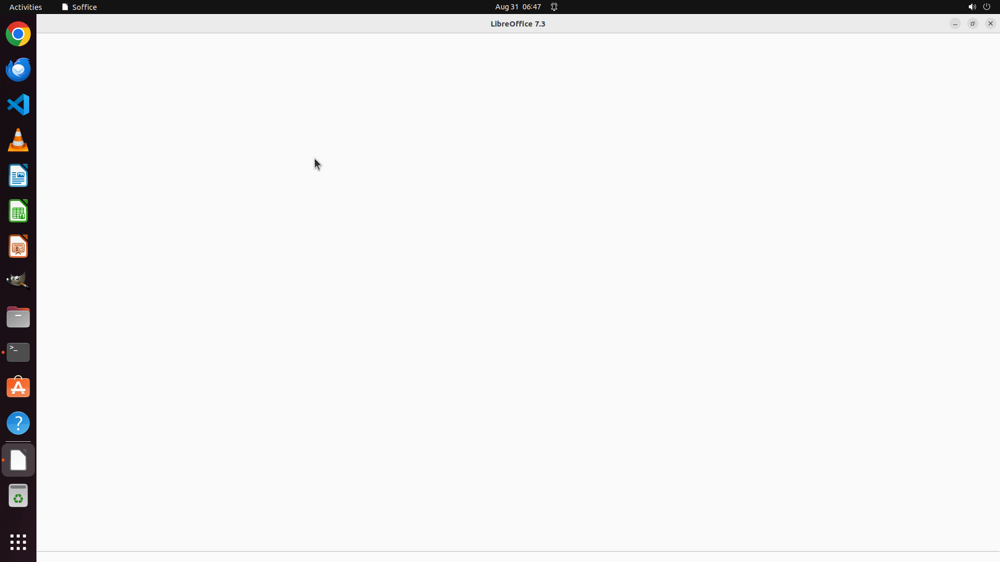
step 10 22:49:14
THINKINGLibreOffice is launching (title bar shows "LibreOffice 7.3" with blank content). It's still loading. Let me wait a few seconds for the presentation to fully appear, then take a screenshot.
ACTIONLibreOffice is loading the presentation. Let me wait for it to fully open.
THINKINGThe presentation is open with 6 slides. I need to read the text of every slide, especially the claims on each and the source list on the final slide (slide 6). The slide panel is small. Let me close the notification bars first, then read each slide's content carefully by clicking through them.
To read the full text reliably, I should enlarge the view. But a better approach: I'll click each slide in the panel and read the main content area. Let me first close the two info bars to get more space, then examine each slide.
Let me close the notification bars (the X at 929,124 and 929,151).
ACTIONThe presentation is open with 6 slides. Let me close the notification bars first, then examine each slide carefully.
EXECUTED (pyautogui in VM)pyautogui.click(1391, 184)
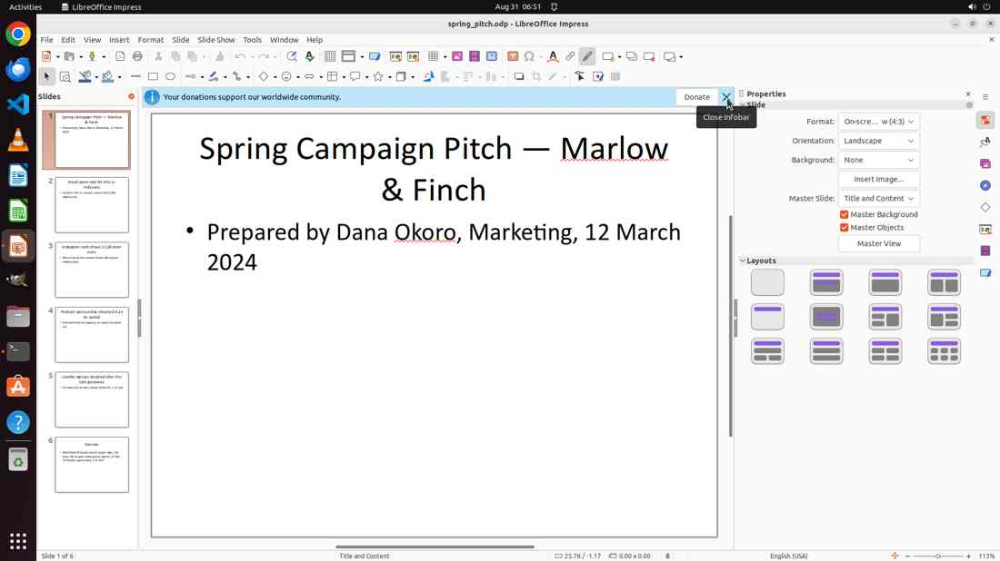
step 12 22:52:30
THINKINGOne info bar closed. Let me close the second one too. Then I need to read all slide content. The best way to read text reliably is to use the terminal to extract text from the .odp, but the task says to work in the GUI. However, reading the file content to determine verdicts is analysis, not a workaround for the actual task (adding notes). The actual work—adding speaker notes—must be done in the GUI. To determine the correct verdicts, I need to read each slide's claim and the source list.
I could read via GUI by clicking each slide, but the thumbnails are tiny. A cleaner way to accurately read the text is to extract it. But the notes must be added via GUI. Let me first close the second info bar, then read each slide in the main editing area which shows readable text. Let me proceed by clicking each slide and reading.
Actually, to be efficient and accurate, let me extract the text via terminal for analysis (this is just reading, not modifying). But I'm in the GUI now. Let me just read slides via the GUI since text is fairly large in main area. Slide 1 is a title slide — no claim. Let me first close the second bar.
EXECUTED (pyautogui in VM)pyautogui.click(1391, 184)
step 13 22:55:13
THINKINGBoth info bars are closed. Now I need to read each slide's text accurately to determine verdicts. The thumbnails are too small to read reliably. The most reliable way to read the full text content is to extract it. Since reading the file for analysis is not the "workaround" concern (the actual modification is adding notes via GUI), I'll extract text via terminal to be precise. But I'm currently in Impress.
Actually, let me reconsider. I can read each slide in the main editing area by clicking each slide. The text is large and readable there. Let me read each slide one by one. Slide 1 is the title (no claim). Let me click slide 2.
However, to be efficient and accurate, extracting the text via a terminal gives me a reliable, complete record including slide 6's source list which I must compare against. Let me switch to terminal and extract text. This is just for reading/analysis. Let me do it — it's the most reliable. I'll use the terminal. But the file may be locked while open in Impress; reading (unzip) is fine.
Let me go to terminal to extract text for analysis. I'll unzip and grep the content.xml, or better use a simple approach: python-pptx won't work for odp. I can unzip the odp and read content.xml. Let me use unzip -p and strip tags.
ACTIONBoth bars are closed. To determine accurate verdicts, I need to read every slide's exact text, especially the source list on slide 6. Let me extract the text via the terminal for reliable analysis. I'll switch to the terminal.
EXECUTED (pyautogui in VM)pyautogui.press("command")
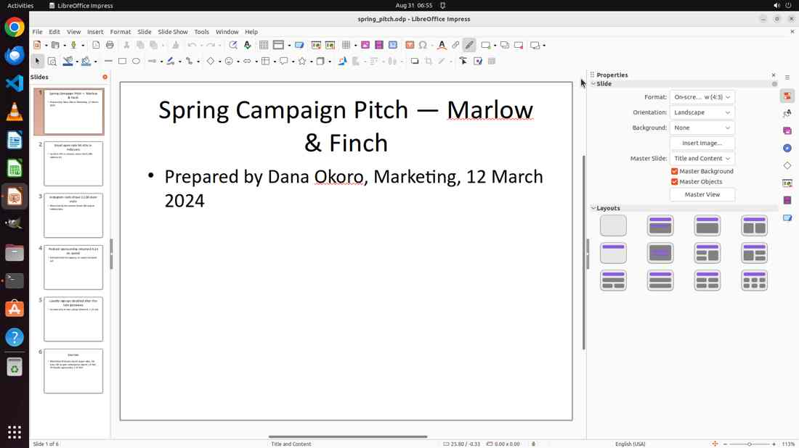
step 14 22:57:34
THINKINGThe super key didn't open an overview. I'll click the terminal icon in the dock to switch to it. Actually, I could just read the slides directly in the GUI to avoid the file-lock concern and stay purely within the GUI as recommended. But reading the small thumbnails is unreliable, and reading the main view slide-by-slide is fine and reliable.
Let me reconsider: The recommendation is to use GUI directly. Reading each slide in the main editing area is GUI-based and reliable. I'll do that. Let me click through slides 2-6 reading the large text. Slide 1 (title) - no claim. Let me click slide 2.
Actually, extracting text via terminal is far more reliable and complete for the source list comparison, and it's just a read-only analysis step. The task modification (notes) will still be done in GUI. Both are valid, but I want accuracy. However, the file is open in Impress; unzipping a locked file for reading is fine. Let me use terminal.
I'll click the terminal icon in the dock.
ACTIONLet me switch to the terminal to extract the text reliably for analysis.
EXECUTED (pyautogui in VM)pyautogui.click(32, 669)
step 15 22:59:14
THINKINGThe terminal is in focus. I'll extract the text from the .odp's content.xml. The odp is a zip. I'll unzip -p and use sed to insert newlines before text-bearing tags, then strip tags. A robust approach: use unzip -p to get content.xml and pipe through a sed that converts <text:p> to newlines and strips remaining tags. Let me build a command.
I'll run:
unzip -p /home/user/documents/spring_pitch.odp content.xml | sed 's/<text:p[^>]*>/\n/g; s/<text:line-break[^>]*>/\n/g; s/<\/text:h[^>]*>/\n/g; s/<[^>]*>//g' | sed 's/&/\&/g'
Let me type it. I'll press Enter via explicit Return.
ACTIONThe terminal is focused. Let me extract the slide text from the presentation's content.
EXECUTED (pyautogui in VM)pyautogui.click(599, 372)
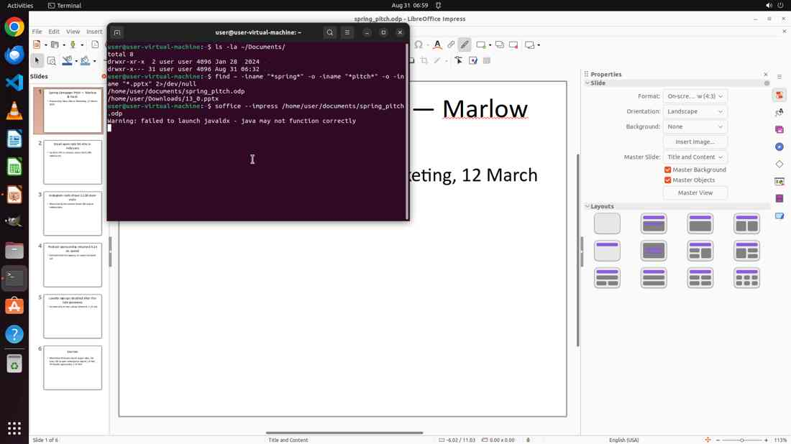
step 16 23:01:26
THINKINGI'll extract text per slide. A clean approach: extract content.xml to a file, then split by draw:page (each slide) and strip tags. Simpler: just dump all text with newlines per paragraph, which will still be readable in order. Let me write the command. I'll add markers for slide boundaries by inserting a line before each draw:page.
TOOL CALL<tool_call>
<function=computer_use>
<parameter=action>
type
</parameter>
<parameter=text>
unzip -p /home/user/documents/spring_pitch.odp content.xml | sed 's/<draw:page /\n===SLIDE=== <draw:page /g; s/<text:p[^>]*>/\n/g; s/<\/text:h[0-9]>/\n/g; s/<[^>]*>//g; s/&/\&/g' | sed 's/&/\&/g' > /tmp/slides.txt; cat -A /tmp/slides.txt | head -100
</parameter>
</function>
</tool_call>
EXECUTED (pyautogui in VM)pyautogui.typewrite("unzip -p /home/user/documents/spring_pitch.odp content.xml | sed 's/<draw:page /\\n===SLIDE=== <draw:page /g; s/<text:p[^>]*>/\\n/g; s/<\\/text:h[0-9]>/\\n/g; s/<[^>]*>//g; s/&/\\&/g' | sed 's/&/\\&/g' > /tmp/slides.txt; cat -A /tmp/slides.txt | head -100")
step 17 23:03:15
THINKINGThe command was typed but not yet executed (the prompt hasn't returned; the newline in type didn't trigger Enter). Let me press Return to execute.
EXECUTED (pyautogui in VM)pyautogui.press("return")
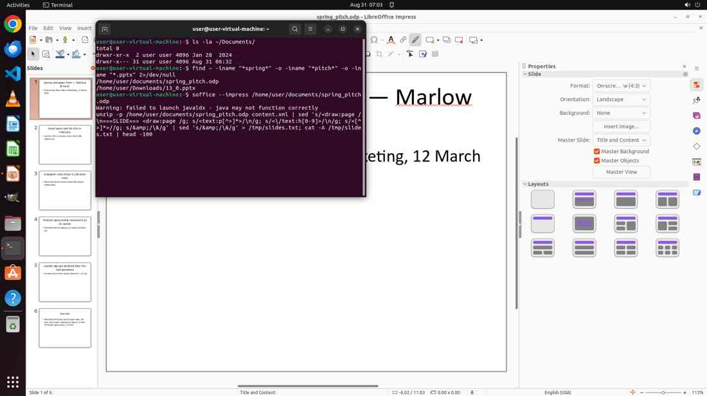
step 18 23:04:52
THINKINGThe screen still shows the same state — the command hasn't produced output yet or the prompt hasn't refreshed in the screenshot. The window seems stuck showing the old prompt. It's possible the terminal isn't focused for keyboard input. Let me click directly in the terminal window body to ensure focus, then press Return.
ACTIONLet me ensure the terminal has focus by clicking inside it, then execute.
EXECUTED (pyautogui in VM)pyautogui.click(599, 449)
step 19 23:05:33
THINKINGThe command text is present in the terminal but hasn't executed. There's a cursor at the end of the last line. The type didn't include a trailing newline that registered. Let me press Return now that the terminal is focused.
EXECUTED (pyautogui in VM)pyautogui.press("return")
step 20 23:06:20
THINKINGThe terminal output isn't changing — it seems my keystrokes (Return) aren't reaching the terminal, or the terminal window isn't actually receiving focus despite appearances. The screenshots are identical. This is odd. It could be that the soffice command is still running in this shell (blocking), so the shell isn't at a prompt to accept new input — the "soffice --impress" launched in the foreground and is occupying the shell. That would explain why new commands don't execute: the shell is busy waiting for soffice to exit. The warning line "failed to launch javaldx" was soffice output, and soffice runs in foreground, blocking the shell.
That's the issue. My new command got typed into the shell's stdin buffer but soffice is running, so it won't run until soffice exits. I need a separate shell. Options: open a new terminal tab, or the type may have gone nowhere useful.
Let me open a new terminal tab with Ctrl+Shift+T. But first, focus is the concern. Let me click on the terminal and press Ctrl+Shift+T to open a new tab where the shell is free.
ACTIONThe `soffice` command is running in the foreground, blocking this shell. Let me open a new terminal tab to run commands.
EXECUTED (pyautogui in VM)pyautogui.click(599, 299)
step 21 23:07:09
THINKINGI clicked to focus. The command text is still sitting in the input line (buffered) because soffice is occupying the shell. I need a fresh shell. Let me open a new terminal tab with Ctrl+Shift+T. Then in the new tab, I'll re-run the extraction command.
ACTIONLet me open a new terminal tab to get a free shell.
EXECUTED (pyautogui in VM)pyautogui.press("return")
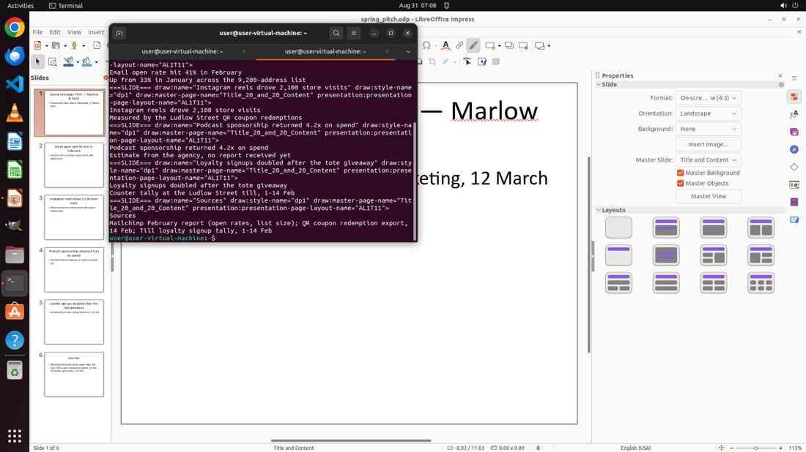
step 24.1 23:10:04
THINKINGNow I can read the content. Let me scroll up to see slide 1 too. The visible output shows:
Slide (name="Email open rate hit 41% in February"):
- Email open rate hit 41% in February
- Up from 33% in January across the 9,200-address list
===SLIDE=== name="Instagram reels drove 2,100 store visits":
- Instagram reels drove 2,100 store visits
- Measured by the Ludlow Street QR coupon redemptions
===SLIDE=== name="Podcast sponsorship returned 4.2x on spend":
- Podcast sponsorship returned 4.2x on spend
- Estimate from the agency, no report received yet
===SLIDE=== name="Loyalty signups doubled after the tote giveaway":
- Loyalty signups doubled after the tote giveaway
- Counter tally at the Ludlow Street till, 1-14 Feb
===SLIDE=== name="Sources":
- Sources
- Mailchimp February report (open rates, list size); QR coupon redemption export, 14 Feb; Till loyalty signup tally, 1-14 Feb
I need to see slide 1 (title) which is above. Let me scroll up. But slide 1 is a title slide — "Spring Campaign Pitch — Marlow & Finch, presented by ... 12 March 2026". It's a title, no claim. Let me scroll up to confirm.
Now let me analyze verdicts against the source list on slide 6:
Sources:
1. Mailchimp February report (open rates, list size)
2. QR coupon redemption export, 14 Feb
3. Till loyalty signup tally, 1-14 Feb
Slide 2: "Email open rate hit 41% in February / Up from 33% in January across the 9,200-address list"
- Backed by "Mailchimp February report (open rates, list size)" — open rates and list size are covered. OK.
Slide 3: "Instagram reels drove 2,100 store visits / Measured by the Ludlow Street QR coupon redemptions"
- Backed by "QR coupon redemption export, 14 Feb". OK.
Slide 4: "Podcast sponsorship returned 4.2x on spend / Estimate from the agency, no report received yet"
- No source in the list for podcast sponsorship. Not backed. NEEDS SOURCE.
Slide 5: "Loyalty signups doubled after the tote giveaway / Counter tally at the Ludlow Street till, 1-14 Feb"
- Backed by "Till loyalty signup tally, 1-14 Feb". OK.
Slide 1: Title slide, no claim. The task says "add a speaker note to every slide saying whether the claim on it is backed". Slide 1 is a title with no claim. But "every slide" — I should add a note to slide 1 too. Since there's no claim to verify, it's not "backed by a source" — but it's also not a claim. The instructions are explicit: start each note with "VERDICT: OK" or "VERDICT: NEEDS SOURCE". For the title slide, there's no claim, so arguably it doesn't need a source. However, to be safe and consistent with "every slide", I need to pick one of the two verdicts. A title slide has no factual claim requiring a source, so "VERDICT: OK" is the reasonable choice (nothing to source).
Hmm, but the task framing: "whether the claim on it is backed by the source list". Slide 1 has no claim. I think marking it OK is reasonable since there's nothing unsubstantiated. I'll add "VERDICT: OK" to slide 1. Actually, let me reconsider — the source slide (slide 6) also has no claim; it's the source list itself. Should I add a note to slide 6 too? "Every slide" — yes, include slide 6 as well. Slide 6 is the source list itself, no claim, so VERDICT: OK.
So my verdicts:
- Slide 1 (title): OK
- Slide 2 (email open rate): OK
- Slide 3 (Instagram reels): OK
- Slide 4 (podcast sponsorship): NEEDS SOURCE
- Slide 5 (loyalty signups): OK
- Slide 6 (sources): OK
Let me scroll up to confirm slide 1 content to be thorough. Let me scroll the terminal up.
ACTIONI can now read the slide content. Let me scroll up to confirm slide 1's content too.
EXECUTED (pyautogui in VM)pyautogui.moveTo(599, 299)
step 24.2 23:10:08
same model call as the previous action
EXECUTED (pyautogui in VM)pyautogui.scroll(3)
step 25 23:10:50
THINKINGNow I can read all the slide content. Let me analyze each claim against the source list on the final slide.
The source list (slide 6) contains:
- Mailchimp February report (open rates, list size)
- QR coupon redemption export, 14 Feb
- Till loyalty signup tally, 1–14 Feb
Now each slide:
- Slide 1 (title): "Spring Campaign Pitch — Marlow & Finch, Prepared by Dana Okoro, Marketing, 12 March 2024" — no factual claim, it's a title.
- Slide 2: "Email open rate hit 41% in February / Up from 33% in January across the 9,200-address list" — open rates and list size → backed by Mailchimp February report (open rates, list size). OK.
- Slide 3: "Instagram reels drove 2,100 store visits / Measured by the Ludlow Street QR coupon redemptions" — backed by QR coupon redemption export. OK.
- Slide 4: "Podcast sponsorship returned 4.2x on spend / Estimate from the agency, no report received yet" — NOT in source list; explicitly says no report received. NEEDS SOURCE.
- Slide 5: "Loyalty signups doubled after the tote giveaway / Counter tally at the Ludlow Street till, 1-14 Feb" — backed by Till loyalty signup tally, 1-14 Feb. OK.
- Slide 6 (Sources): the source list itself.
Now I need to add a speaker note to every slide. The task says "add a speaker note to every slide". This includes slide 1 (title) and slide 6 (sources). For slide 1, there's no claim; for slide 6 it's the source list. I'll add notes to all 6 slides. For slides without a claim, the reasonable verdict is OK (nothing unsupported). Let me think about which is appropriate:
- Slide 1: title, no claim → "VERDICT: OK" (no unsupported claim)
- Slide 6: sources, no claim → "VERDICT: OK"
Now I'll switch to Impress and add notes. I need to use the Notes view or the notes pane. In Impress, View > Notes lets me add notes to each slide. Alternatively, the notes area at the bottom. Let me switch to Impress window. First, I'll minimize/close the terminal or just click on the Impress window. Let me click on the Impress window area (the visible slide area on the right, or the title bar).
Let me click on the LibreOffice Impress window. The Impress is behind the terminal. I'll click on its title bar at top "spring_pitch.odp - LibreOffice Impress" at y=30, but that's covered by terminal? The terminal window spans x~175-660. The title bar at y=30 is above the terminal (terminal starts ~y=40). Let me click at x=900,y=30 to focus Impress. Actually the whole top bar y=30 shows "spring_pitch.odp - LibreOffice Impress" centered. Clicking there should focus the Impress window. But clicking the title bar of a behind window may not raise it if it's a different app. Let me click on the visible slide area of Impress (right side, x=900 y=400) to focus/raise it.
ACTIONI now have all the content I need. Here's my analysis against the source list on slide 6 (Mailchimp February report for open rates/list size; QR coupon redemption export; Till loyalty signup tally):
- **Slide 1** (title): no claim → OK
- **Slide 2** (email open rate 41%, 9,200 list): backed by Mailchimp February report → OK
- **Slide 3** (Instagram reels, QR redemptions): backed by QR coupon redemption export → OK
- **Slide 4** (podcast 4.2x, "no report received yet"): not in source list → NEEDS SOURCE
- **Slide 5** (loyalty signups, till tally 1–14 Feb): backed by Till loyalty signup tally → OK
- **Slide 6** (sources): no claim → OK
Now let me switch to Impress to add the notes. I'll click on the Impress window.
EXECUTED (pyautogui in VM)pyautogui.click(1349, 600)
step 26 23:11:35
THINKINGImpress is now focused with slide 1 displayed. I need to add speaker notes to each slide. The best approach is to use the Notes view (View > Notes) which shows a note area below each slide, or enable the notes pane at the bottom of Normal view.
The Notes view is cleanest: View menu > Notes. In Notes view, I can click the note text area and type, then navigate to the next slide. Let me open View > Notes.
Let me click the View menu.
ACTIONImpress is in focus. I'll switch to the Notes view to add speaker notes cleanly. Let me open the View menu.
EXECUTED (pyautogui in VM)pyautogui.click(201, 150)
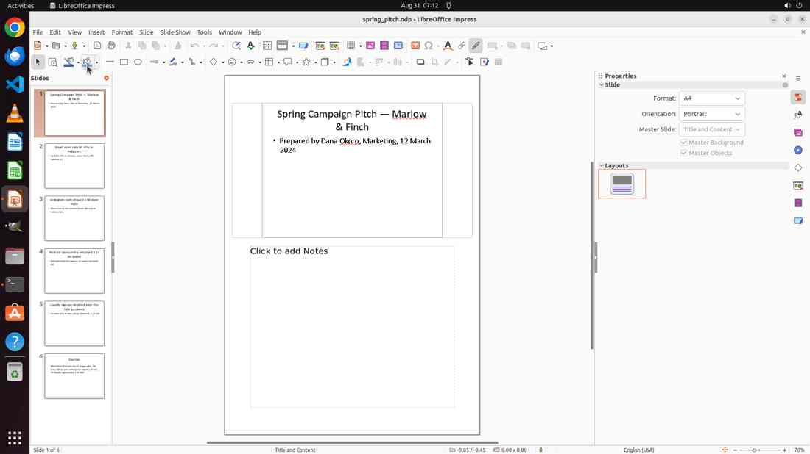
step 28 23:13:26
THINKINGI'm now in Notes view for slide 1. There's a "Click to add Notes" area. I'll click into it and type the note for slide 1. Then I'll navigate to the next slide (using the slide panel on the left, clicking slide 2) and repeat.
Let me click the notes area and type slide 1's note. The notes area is around (588, 500). I'll double-click to enter text edit mode, then type.
Note for slide 1: "VERDICT: OK — Title slide with no factual claim to source."
Let me click into the notes area first, then type.
ACTIONI'm in Notes view for slide 1. Let me click into the notes area and add the note.
EXECUTED (pyautogui in VM)pyautogui.doubleClick(882, 600)
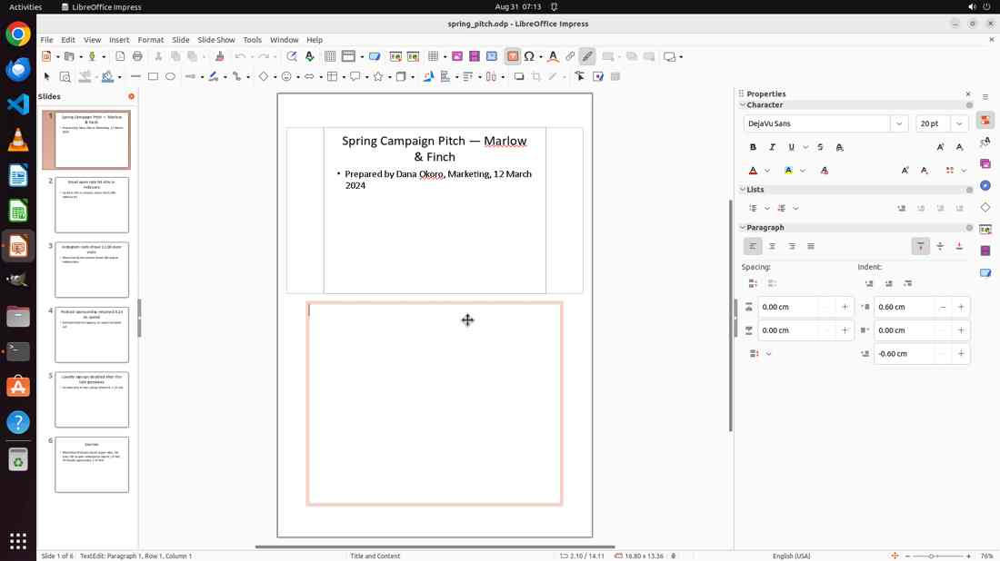
step 29 23:14:48
THINKINGThe notes text box is now in edit mode (status bar shows "TextEdit: Paragraph 1, Row 1, Column 1"). I'll type the note for slide 1. Then I need to move to slide 2.
The concern: when I click slide 2 in the panel, will the typed text commit? Yes, clicking away commits the text. Let me type slide 1's note now.
For slide 1: "VERDICT: OK — Title slide; no factual claim to source."
I'll keep the notes concise but informative. Let me type it.
ACTIONThe notes text box is in edit mode. Let me type the note for slide 1.
TOOL CALL<tool_call>
<function=computer_use>
<parameter=action>
type
</parameter>
<parameter=text>
VERDICT: OK — Title slide only; no factual claim requiring a source.
</parameter>
</function>
</tool_call>
EXECUTED (pyautogui in VM)pyautogui.typewrite("VERDICT: OK — Title slide only; no factual claim requiring a source.")
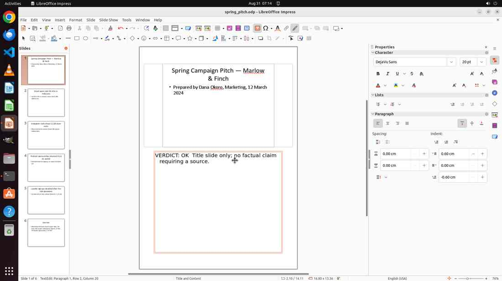
step 30 23:16:13
THINKINGThe note for slide 1 is entered. I notice the "—" (em dash) was typed but the display shows "VERDICT: OK Title slide" — the em dash may not have rendered visibly in this small view but it should be there. Actually it shows "VERDICT: OK Title slide only" — there seem to be two spaces where the dash should be. The em dash might have been dropped by the type action. To be safe and ensure the exact required prefix "VERDICT: OK", the prefix is present clearly. The dash is cosmetic; the requirement is that the note starts with "VERDICT: OK" which it does.
Now let me move to slide 2. I'll click slide 2 in the panel. This commits slide 1's note. Then double-click the notes area of slide 2 and type. Let me batch: click slide 2, then double-click its notes area, then type. But the notes area position may differ slightly per slide; it's the same layout so same coordinates. I'll click slide 2 thumbnail first, then double-click notes at (588,400), then type. However, I should verify the double-click lands in edit mode before typing—risky to batch. Let me do slide 2: click thumbnail, then double-click notes area, then type in one batch since the layout is consistent.
ACTIONSlide 1's note is added. Now let me add the note to slide 2. I'll select slide 2, enter its notes area, and type.
EXECUTED (pyautogui in VM)pyautogui.click(174, 392)
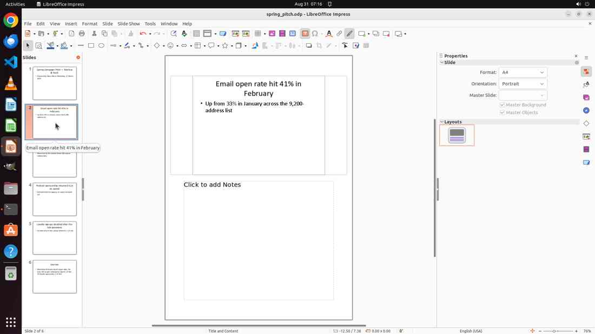
step 31 23:17:20
THINKINGSlide 2 is now shown in Notes view with "Click to add Notes". Slide 1's note was committed (slide 1 thumbnail no longer shows it but that's fine — the note is stored). I'll double-click the notes area and type slide 2's note.
Note for slide 2: "VERDICT: OK — Email open rate (41%) and list size (9,200) are backed by the Mailchimp February report (open rates, list size) on the Sources slide."
Let me double-click notes area then type.
EXECUTED (pyautogui in VM)pyautogui.doubleClick(830, 674)
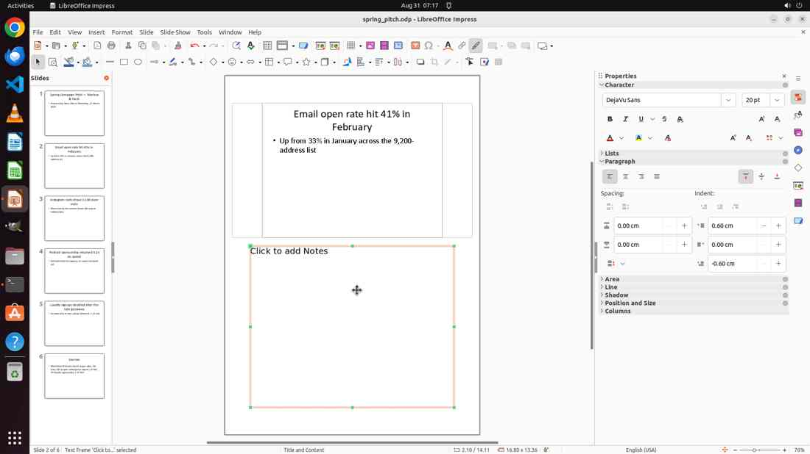
step 32 23:18:20
THINKINGThe status bar shows "Text Frame 'Click to...' selected" — the double-click selected the text frame but it's in object-selection mode, not text-edit mode. I need to be in text edit mode to type. The double-click should have entered edit mode but the status says "selected" not "TextEdit". Let me press Enter or F2 to enter edit mode, then type. Actually F2 enters text edit on a selected frame. Let me press F2 then type. Alternatively, a single double-click inside the empty frame should enter edit mode. The frame shows selection handles. Let me press Return/F2 to enter editing, then type.
I'll press F2 then type the note.
ACTIONThe text frame is selected but not in edit mode. Let me press F2 to enter edit mode, then type the note.
THINKINGNow status bar shows "TextEdit: Paragraph 1, Row 1, Column 1" — I'm in edit mode. Let me type slide 2's note. I'll avoid the em dash this time and use a hyphen or colon to be safe, though em dash seemed fine. To be consistent and safe, I'll use " - " (space hyphen space). Actually the earlier note rendered the em dash as blank spaces, which is a minor cosmetic issue. Let me use a regular hyphen "-" to guarantee visibility and consistency. I'll type the note.
ACTIONNow in text edit mode. Let me type slide 2's note.
TOOL CALL<tool_call>
<function=computer_use>
<parameter=action>
type
</parameter>
<parameter=text>
VERDICT: OK - Backed by the Mailchimp February report (open rates, list size) on the Sources slide.
</parameter>
</function>
</tool_call>
EXECUTED (pyautogui in VM)pyautogui.typewrite("VERDICT: OK - Backed by the Mailchimp February report (open rates, list size) on the Sources slide.")
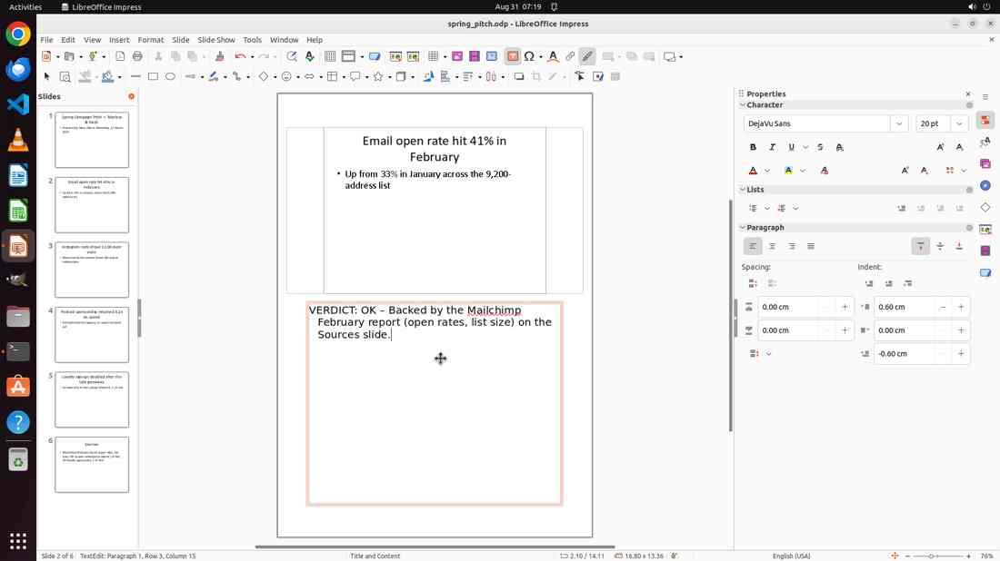
step 34 23:20:31
THINKINGSlide 2's note is entered correctly: "VERDICT: OK - Backed by the Mailchimp February report (open rates, list size) on the Sources slide."
Now slide 3: Instagram reels → OK. I'll click slide 3 thumbnail, double-click notes area (which will select the frame), press F2, then type. Actually, the reliable sequence learned: click thumbnail → double-click notes → (frame selected) → F2 → type. But wait, on slide 1 the double-click directly entered edit mode (status showed TextEdit). The difference is that double-clicking into an empty frame sometimes selects it. To be safe I'll do: click thumbnail, double-click notes, F2, type. But F2 when already in edit mode does nothing harmful. Actually if double-click already entered edit mode, F2 might do nothing or re-toggle. To be safe, I'll just double-click then check—but I want to batch.
The consistent safe pattern: double-click reliably enters edit mode when clicking directly in the text region. On slide 2 the first double-click only selected the frame (because I clicked at 554,450 which is center of empty area). On slide 1 I clicked at 588,400 (higher, near where "Click to add Notes" text is) and it entered edit mode.
To be robust, I'll do: click thumbnail, double-click notes area near the "Click to add Notes" text (top-left of frame, ~460,396), then type. If it's just selected, typing won't work. Better: double-click then F2 then type — F2 is idempotent-ish (enters edit if not already). Let me batch click thumbnail + double-click + F2 + type for slide 3.
Actually, pressing F2 while already in text edit mode exits? No—F2 toggles: if in object select it enters edit; if already in edit, F2 does nothing (stays). So double-click + F2 is safe. Let me batch slide 3.
Slide 3 note: "VERDICT: OK - Backed by the QR coupon redemption export (14 Feb) on the Sources slide."
ACTIONSlide 2 is done. Now slide 3 (Instagram reels, backed by QR coupon redemption export).
EXECUTED (pyautogui in VM)pyautogui.click(174, 515)
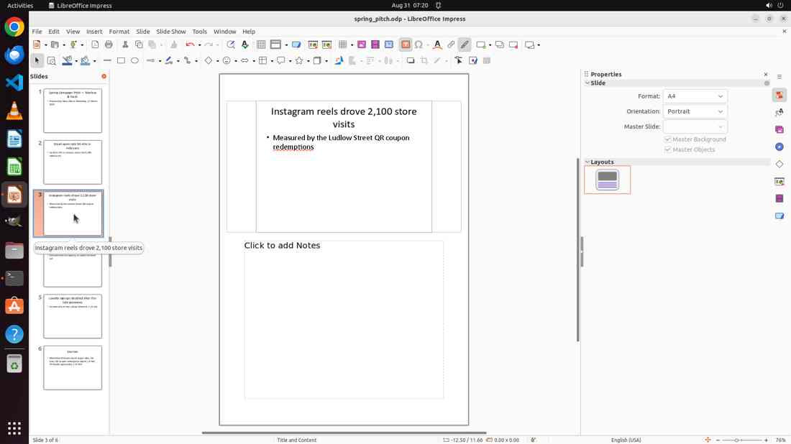
step 35 23:21:18
THINKINGSlide 3 is displayed. Now I'll double-click the notes area to select/edit, press F2 to ensure edit mode, and type the note. I'll batch: double-click at (554,450), F2, type. This is safe.
THINKINGNow in TextEdit mode (status shows TextEdit Row 1 Column 1). Type slide 3's note.
TOOL CALL<tool_call>
<function=computer_use>
<parameter=action>
type
</parameter>
<parameter=text>
VERDICT: OK - Backed by the QR coupon redemption export (14 Feb) on the Sources slide.
</parameter>
</function>
</tool_call>
EXECUTED (pyautogui in VM)pyautogui.typewrite("VERDICT: OK - Backed by the QR coupon redemption export (14 Feb) on the Sources slide.")
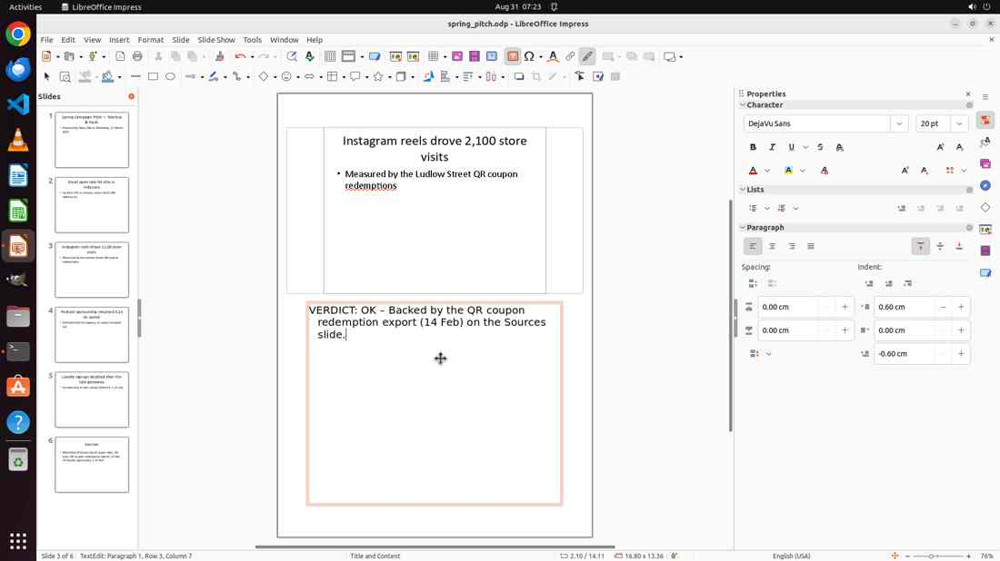
step 38 23:24:09
THINKINGSlide 3 done. Now slide 4: Podcast sponsorship → NEEDS SOURCE. Click slide 4 thumbnail, double-click notes, F2, type.
Slide 4 note: "VERDICT: NEEDS SOURCE - No matching source on the Sources slide; the slide itself notes it is only an agency estimate with no report received."
ACTIONSlide 3 is done. Now slide 4 (podcast sponsorship) — this one is NOT in the source list, so it needs a source.
EXECUTED (pyautogui in VM)pyautogui.click(174, 642)
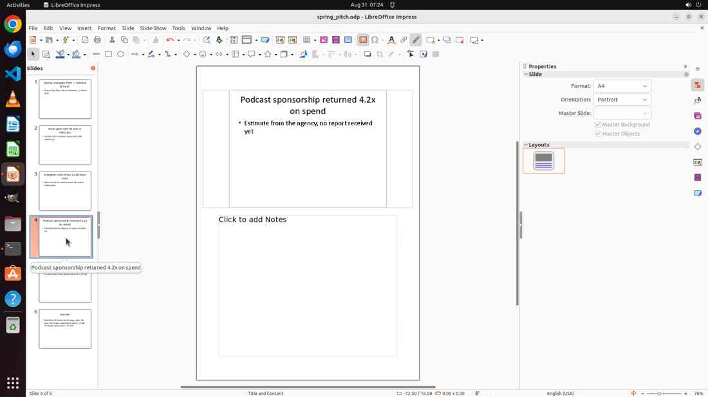
step 39 23:25:00
THINKINGSlide 4 is shown: "Podcast sponsorship returned 4.2x on spend / Estimate from the agency, no report received yet". This confirms my analysis. Let me double-click the notes area, F2, then type the NEEDS SOURCE note.
THINKINGIn edit mode now (status TextEdit Row 1 Col 1). Type slide 4's NEEDS SOURCE note.
TOOL CALL<tool_call>
<function=computer_use>
<parameter=action>
type
</parameter>
<parameter=text>
VERDICT: NEEDS SOURCE - No podcast sponsorship source appears on the Sources slide; the slide itself notes this is only an agency estimate with no report received yet.
</parameter>
</function>
</tool_call>
EXECUTED (pyautogui in VM)pyautogui.typewrite("VERDICT: NEEDS SOURCE - No podcast sponsorship source appears on the Sources slide; the slide itself notes this is only an agency estimate with no report received yet.")
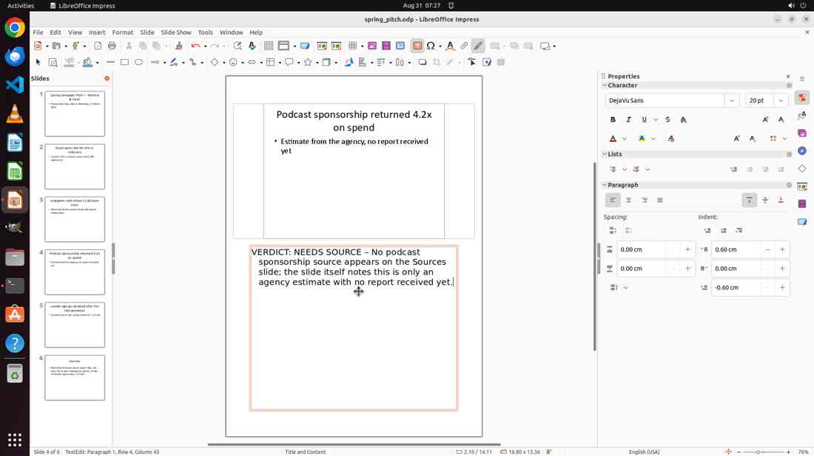
step 42 23:27:19
THINKINGSlide 4 done: "VERDICT: NEEDS SOURCE - No podcast sponsorship source appears on the Sources slide; the slide itself notes this is only an agency estimate with no report received yet."
Now slide 5: Loyalty signups → OK (backed by Till loyalty signup tally, 1-14 Feb). Click slide 5 thumbnail, double-click notes, F2, type.
ACTIONSlide 4 is done. Now slide 5 (loyalty signups, backed by the Till loyalty signup tally).
EXECUTED (pyautogui in VM)pyautogui.click(174, 766)
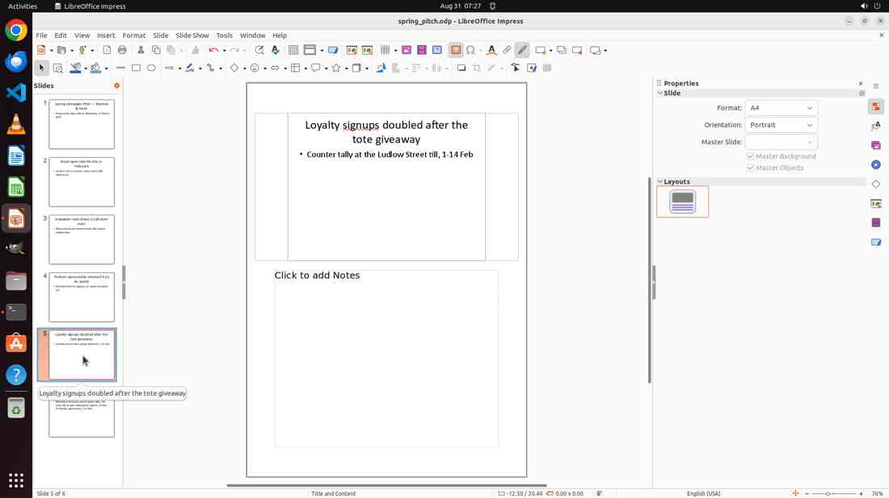
step 43 23:28:11
THINKINGSlide 5 shown: "Loyalty signups doubled after the tote giveaway / Counter tally at the Ludlow Street till, 1-14 Feb" — backed by Till loyalty signup tally, 1-14 Feb → OK. Double-click notes, F2, type.
TOOL CALL<tool_call>
<function=computer_use>
<parameter=action>
type
</parameter>
<parameter=text>
VERDICT: OK - Backed by the Till loyalty signup tally (1-14 Feb) on the Sources slide.
</parameter>
</function>
</tool_call>
EXECUTED (pyautogui in VM)pyautogui.typewrite("VERDICT: OK - Backed by the Till loyalty signup tally (1-14 Feb) on the Sources slide.")
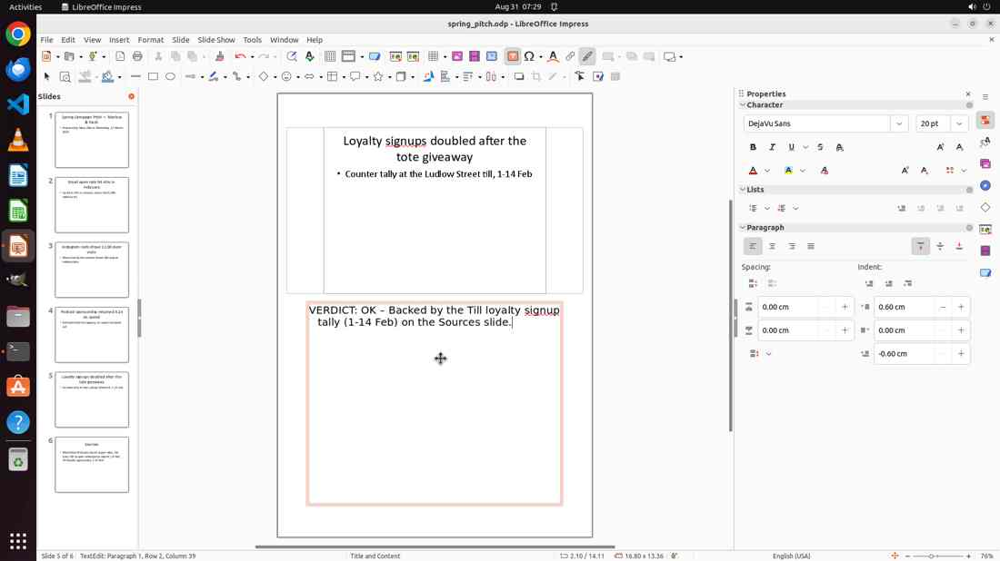
step 46 23:30:01
THINKINGSlide 5 done. Now slide 6: the Sources slide. It's the source list itself, no claim. The task says add a note to every slide. I'll add "VERDICT: OK - This is the Sources slide itself; it lists the reference sources and contains no independent claim to verify."
Click slide 6 thumbnail, double-click notes, F2, type.
ACTIONSlide 5 is done. Now the final slide 6 (the Sources slide itself), which I'll note as OK since it contains the source list with no independent claim.
EXECUTED (pyautogui in VM)pyautogui.click(174, 892)
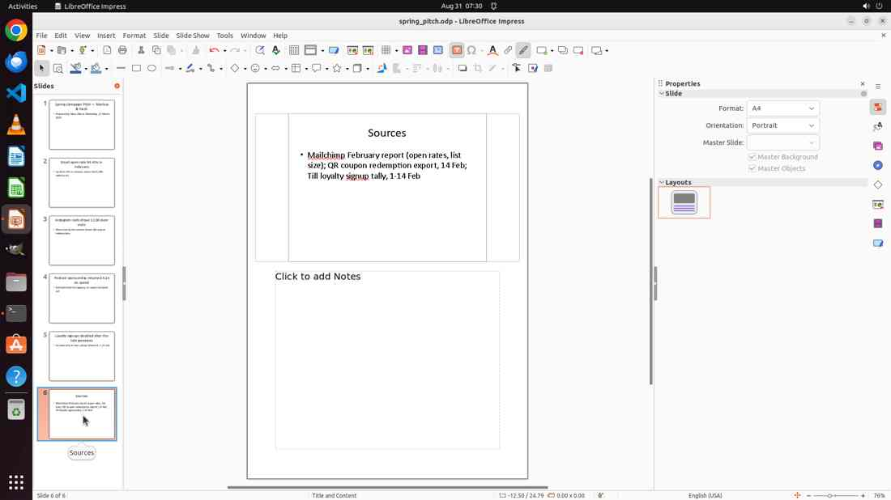
step 47 23:30:55
THINKINGSlide 6 confirms the source list: "Mailchimp February report (open rates, list size); QR coupon redemption export, 14 Feb; Till loyalty signup tally, 1-14 Feb". This validates my verdicts. Now add slide 6's note: double-click notes, F2, type.
ACTIONThe Sources slide confirms the three sources. Let me add its note.
THINKINGIn edit mode. Type slide 6's note, then I'll click outside to commit and save.
TOOL CALL<tool_call>
<function=computer_use>
<parameter=action>
type
</parameter>
<parameter=text>
VERDICT: OK - This is the Sources slide itself; it lists the reference sources and contains no independent claim to verify.
</parameter>
</function>
</tool_call>
EXECUTED (pyautogui in VM)pyautogui.typewrite("VERDICT: OK - This is the Sources slide itself; it lists the reference sources and contains no independent claim to verify.")
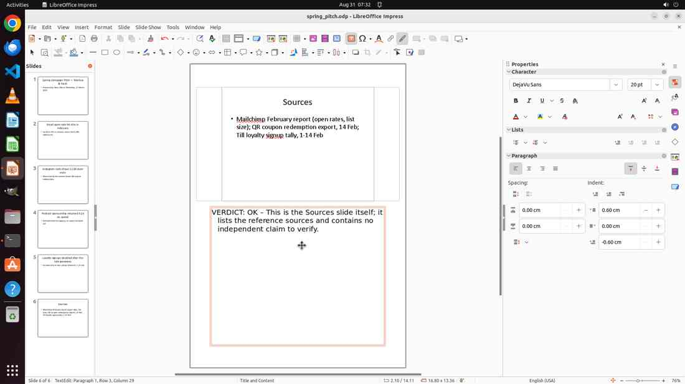
step 50 23:33:21
THINKINGAll 6 notes are entered. Now I should verify slide 1's note was saved correctly (I entered it before and the em dash rendered as spaces). Let me click outside the notes box to deselect/commit, then save with Ctrl+S (keep ODF format). Then I'll verify slide 1's note by clicking slide 1.
Let me click on an empty area to commit slide 6's note, then Ctrl+S. I'll click at (1150, 500) empty area, then Ctrl+S.
ACTIONAll six notes are entered. Let me click outside to commit, then save the file.